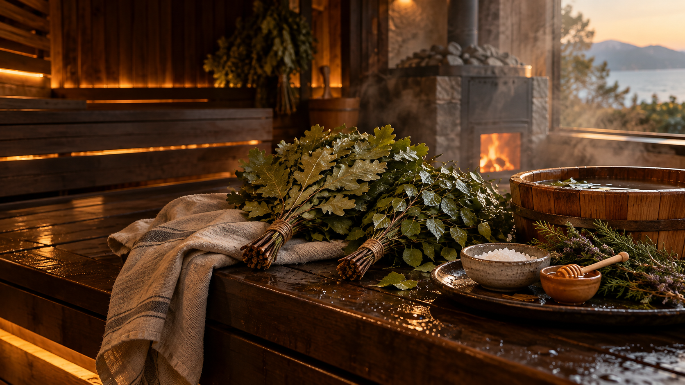
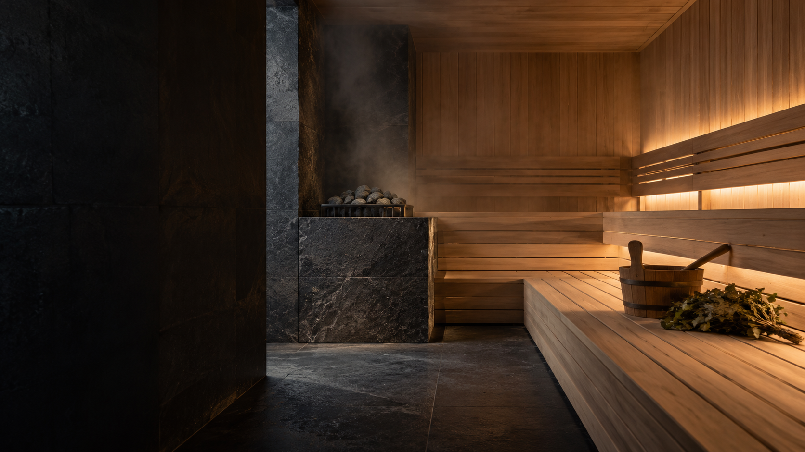

Встреча
Знакомство с мастером и время освоиться, прежде чем войти в парную.
01 / СЕРДЦЕ ПУТЕШЕСТВИЯ
Мастер парения ведет весь день лично. Темп, количество заходов, еду и время после парной согласуем до приезда.
Смотреть программу паренияХудожественная видеосцена. Реальную площадку покажем до бронирования.ИСКУССТВО ПАРЕНИЯ
Перед посещением мастер узнает пожелания гостей по температуре, длительности и интенсивности. Во время парения ориентируется на их самочувствие и оставляет паузы на отдых.
Веники, дополнительные процедуры и меню обсуждаем отдельно. Финальный состав программы подтверждаем вместе с площадкой.
ДЕТАЛИ РИТУАЛА
Веники, травы и уход подбираем после разговора с мастером. Сцены ниже созданы для атмосферы и не показывают конкретную баню.
ХОД ВЕЧЕРА
Знакомство с мастером и время освоиться, прежде чем войти в парную.
Заходы и отдых между ними. Интенсивность подбирается для гостей.
Еда, напитки и вечер без следующего пункта в расписании.
ПРОГРАММА ПАРЕНИЯ
Первый пар, работа с вениками, уходовые процедуры и тихий финал. Посмотрите пример дня и отметьте то, что хочется обсудить с мастером.
Открыть программу
АТМОСФЕРА
Здесь художественные образы поездки. Фотографии доступной банной площадки и подробности программы покажем до бронирования.

Концептуальная видеосцена парной
ПОЕЗДКА ПОД ВАШИ ДАТЫ
Расскажите о гостях и датах. После разговора покажем площадку, состав парения и условия.
Описать банный день